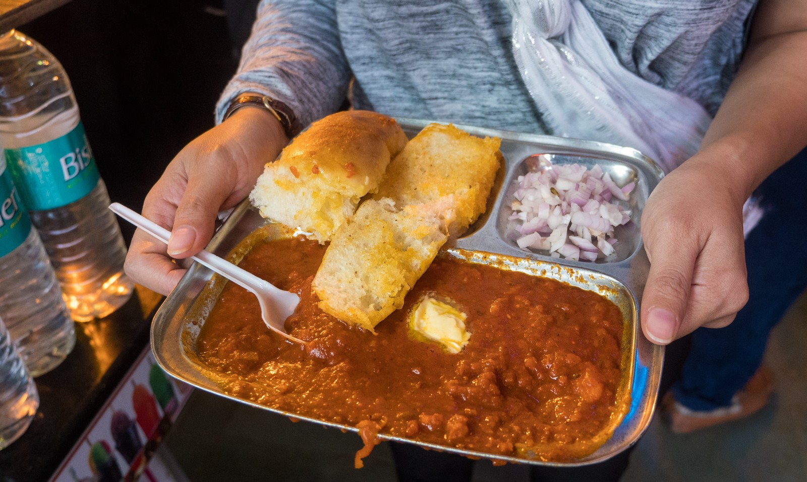
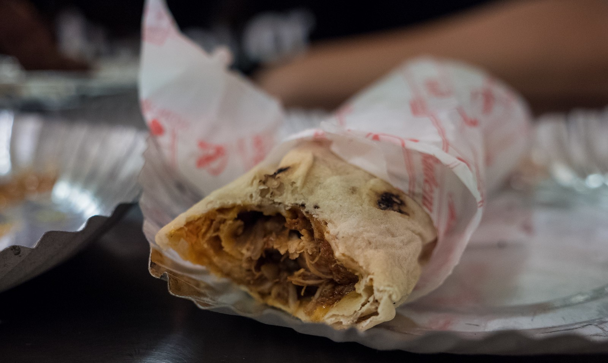
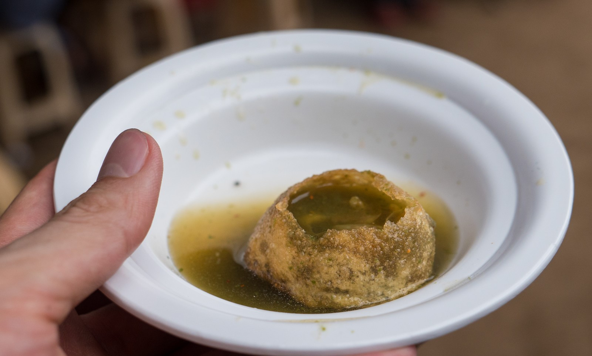
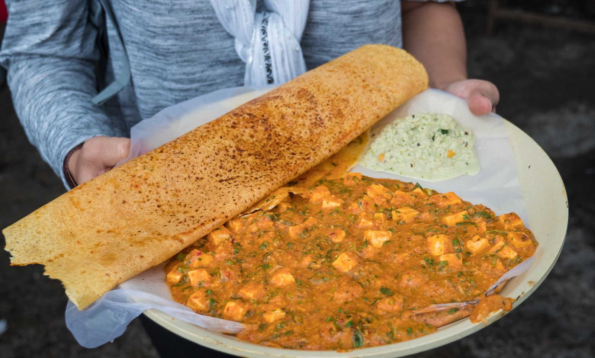

Vada Pav
If you take a walk down any street in Mumbai, you’re bound to quickly come across vada pav, one of Mumbai’s most popular and widely available street food snacks.
Also referred to as the Mumbai vegetarian burger, vada pav consists of a spiced mashed potato mixture, which is deep fried into a patty, packed into a white fluffy bun, and garnished with a variety of different chutneys and spices for seasoning.
Although it sounds rather simple, and it is, it’s one of greatest tasting vegetarian burgers you’ll likely ever eat. The chutney makes all the difference. And also, don’t miss those fried chilies on the side to give you a kick of heat and flavor.
Bhelpuri
Another Mumbai street food you’ll commonly find throughout the city, especially along the busy beaches like Girgaum Chowpatty and Juhu, is bhelpuri. Although it’s common around India now with many variations, bhelpuri is one of the homegrown Indian snacks from Mumbai.
The basic recipe includes puffed rice and sev, which are mixed together with potatoes, onions, tomatoes, again a variety of chutney, and it’s often topped with a handful of chopped cilantro. The result is a crunchy snack that’s tangy, spicy, and sweet from all the sauces, with a wonderful balance of flavor. It’s the type of Mumbai street food that once you start eating it, you can’t stop.

Pav Bhaji
I had my first taste of pav bhaji years ago in Kolkata, but when I posted about that, I received many messages from people telling me I needed to try Mumbai pav bhaji. And so finally on my trip to Mumbai with Star Alliance, I made it out to Juhu Beach one day, and the first thing I headed for was pav bhaji (and there are about 20 places to eat pav bhaji in the food section of Juhu Beach, maybe more).
Pav bhaji has an interesting history, and it was originally a late night food that was made for workers from leftovers. A combination of vegetables were mashed up, mixed with spices, and served with bread.

Rolls
On this list of top Mumbai street food you’ll find a lot of vegetarian food (and I happen to think some of the world’s best vegetarian food is in India), but kebabs and rolls are undoubtedly non-veg.
Mumbai has a number of legendary restaurants that serve delicious kebabs and rolls, and one of my personal favorites are the Mumbai bhuna rolls. Bhuna rolls are made with boneless chicken which is cooked in a spice filled gravy, and wrapped within a freshly cooked rumali roti, which is a thin roti that’s very similar to a tortilla.

Pani-Puri
It takes some serious street food genius to come up with something like pani puri; Who would think to add flavored water to a circular chip that gets soggy?
I’m here to tell you, it works extremely well, and it’s an absolute stunner of an Indian street food.
The little puris are poked with a hole, half stuffed with potatoes and chickpeas, seasoned with spices, and filled with chutney and flavored water. As soon as the vendor hands you one, you’ve got to eat it on spot immediately so the puri remains crunchy, and the spice filled water will collapse in your mouth with the potatoes and chickpeas.
Bombay Duck Fry
Although Bombay duck is also served at indoor restaurants and local spots in Mumbai, I had to include it on this food list because it’s a favorite food in Mumbai. Although it’s called Bombay duck (or bombil), it’s not really duck at all, but it’s a type of lizardfish.
The lizardfish is coated in a layer of semolina, then deep fried to a crisp. The result is a crispy outer edge and the fish remains creamy and oily on the inside. Bombay duck is a fantastic dish to eat in Mumbai, and it goes particularly good with a full thali meal that includes rice, chapati, and a variety of side curries to enhance everything.
When I visited Mumbai, Bombay duck was one of the foods I was most looking forward to eating, and it was wholly satisfying with every bite.

Dosa
Although dosas are originally from South India, since Mumbai is such a melting pot of India, the dosa is also a very common street food in Mumbai.
A dosa is made from a batter of rice and urad bean flour which is lightly fermented, and then fried on a hot circular plate in a thin crepe like shape. Once it’s golden and crispy on the bottom, any number of fillings can be added to the center. The traditional version is the masala dosa, where masala potatoes are added to the dosa, and it’s served with sambar and coconut chutney on the side.